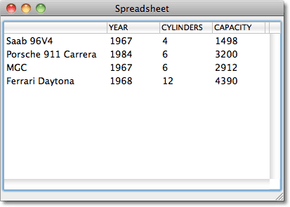
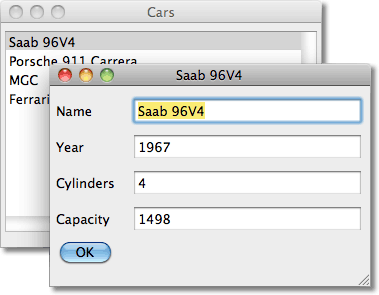
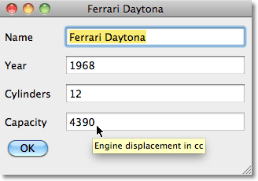
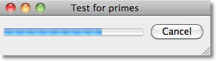
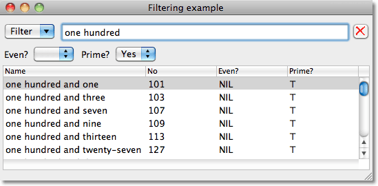
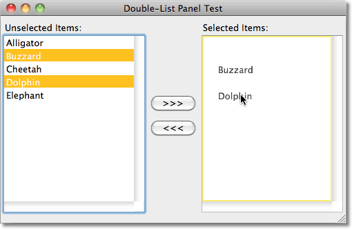

はじめに
最近、Macintosh上で動くアプリケーションをMacintosh Common Lisp(MCL)からLispworksに書きかえる仕事を引き受けました。その仕事の主な作業は、UIをLispworks CAPIで書きかえる作業でした。LispWorks CAPIは、MCLとは全く異なる手法と用語を用いていました。
このCookbookでは、この経験を一般化して導き出した例を紹介します。LispWorksを使うプログラマーに、役に立つことをのぞんでいます。例では、LispWorks CAPIを用いて、簡潔で役に立つinterfaceアプリケーションを多く作り出す方法をお伝えします。
Spreadsheet
データを表示するためのSpreadsheet:

Object Editor
CLOSオブジェクトのスロットを編集する:

Simple Tooltips
ツールチップヘルプをオブジェクトエディタに加える:

Multi-Process Dolist
プログレスバーを用いて並列でタスクを走らすことができるdolist:

Boolean Filters Layout
multi-column-listパネルをもつフィルタリングレイアウト。データの特定の列に対して、論理値でフィルタリングをするポップアップメニュー:

List Panels with Drag
double-list-panelの左右リスト間にドラッグ&ドロップを加える:
